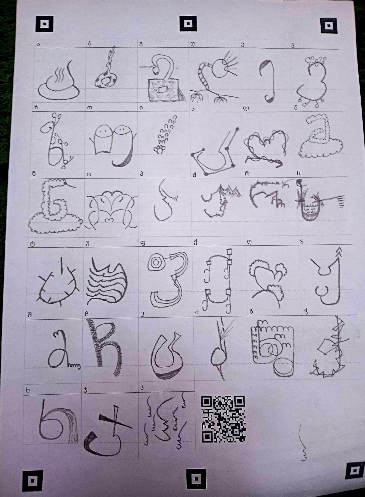
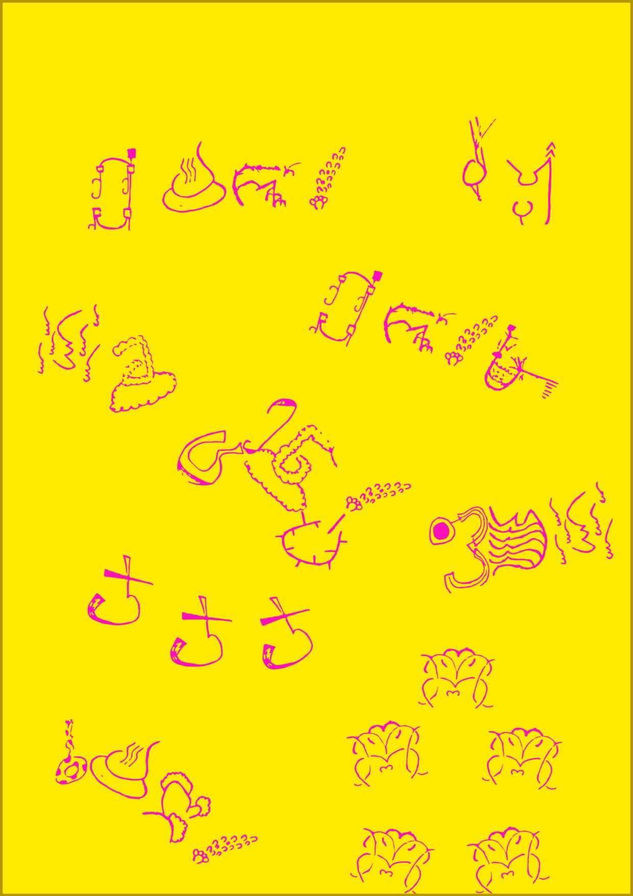
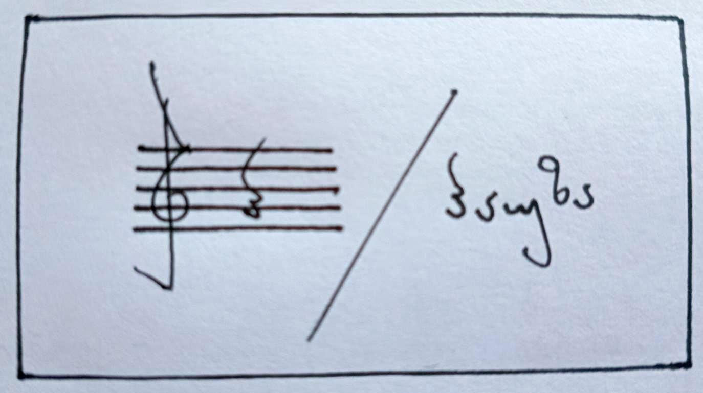

Xarafontinator — „ხარახურას“ ქართული ანბანის ხატვის ვორქშოპი
ახლახან თბილისში „ხარახურას“ მიერ მოწყობილ ერთ-ერთ ვორქშოპს დავესწარი. „ხარახურა“, რაც ინგლისურად ნიშნავს ხლამს/ჯართს, თბილისში ადგილობრივი არაკომერციული რიზოგრაფ-სტუდია და გამომცემლობაა. ვორქშოპის მსვლელობისას მონაწილეებს დაგვირიგდა ფურცლები, რომლებზეც ჩვენი საკუთარი ქართული ანბანი დავხატეთ. ხატვის დასრულების შემდეგ, ფურცლებს ფოტოები გადავუღეთ და ავტვირთეთ „ხარახურას“ მიერ შექმნილ სპეციალურ ვებ-გვერდზე, სადაც ჩვენი ანბანები გაციფრულდა და შრიფტების ბიბლიოთეკას შეემატა.
ამის შემდეგ, მაშინვე შეგვეძლო შრიფტების დათვალიერება და პოსტერის შექმნა.

პოსტერის გვერდზე ვირჩევდით შრიფტს და შემდეგ ვკრეფდით ასოებს. ასო-ბგერების დაბეჭდვისას კი გრაფემები, როგორც წვიმის წვეთები, ისე ეშვებოდნენ პოსტერის ქვედა ნახევრისკენ. ჩვენ თავად შეგვეძლო გრაფემების მდებარეობის შეცვლა და ზუსტი ადგილის შერჩევა. ასევე შეგვეძლო ხაზების გავლება და როგორც პოსტერის, ისე გრაფემათა ფერის შეცვლა. მას შემდეგ, რაც ჩვენი პოსტერი დავასრულეთ, გალერეაში დავამატეთ.
აი, მე ასეთი შრიფტი შევქმენი:

შემდეგ კი, აი, ასეთი პოსტერი გავაკეთე:

ამ ბმულზე შესაძლებელია სხვა პოსტერების დათვალიერებაც.
იმ შემთხვევაში, თუ ვებ-საიტზე პოსტერები არ გამოჩნდება, შეგიძლიათ ინტერნეტის არქივში მონახოთ.
ეს ვორქშოპი ძალიან შემიყვარდა! ქართული ანბანი მართლაც გამორჩეული და ლამაზია. ანბანი იყო ის ერთ-ერთი მიზეზი, რომლის გამოც ქართულის სწავლა დავიწყე. როცა ქართული ანბანი პირველად დავინახე, თითქმის გულ-მუცელი ამომიტრიალდა — ალბათ აღელვებისგან.

როგორც ყოფილ კომპოზიტორს, ზოგმა ასო-ბგერამ მუსიკალური ნოტაცია გამახსენა. მაგალითად: ასო-ბგერა „პ“ ცოტათი ჰგავს „𝄽“ სიმბოლოს. ვორქშოპმა კიდევ ერთხელ გამახსენა, რომ ქართული ასოების გამოწერა ძალიან სასიამოვნოა. ვისიამოვნე სხვა მონაწილეთა მუშაობის პროცესითაც და მათ მიერ შექმნილი უნიკალური პოსტერებით. ასევე აღფრთოვანებული დავრჩი ამ ვორქშოპის კოლექტიური დაარქივების იდეით.
როგორც ადამიანმა, რომელსაც აინტერესებს როგორც ქართული ენა, ისე ციფრული არქივები, ძალიან ვისიამოვნე და ვიხალისე.
ამ სახალისო ვორქშოპისთვის „ხარახურას“ დიდ მადლობას ვუხდი. თუ თბილისში იქნებით, გირჩევთ, აუცილებლად ეწვიოთ მათ! „ხარახურას“ ბევრი საინტერესო პუბლიკაცია და ვორქშოპი აქვს და თავადაც ძალიან მეგობრულები არიან!
„ხარახურა“ ინსტაგრამზე.
მათი ვებ-გვერდი „Xarafontinator“.
მე ასევე დავაარქივე მათი ვებ-საიტი ინტერნეტის არქივში.
ასევე მადლობას ვუხდი ჩემს ქართული ენის მასწავლებელს, მაკა ბუჟღულაშვილს, რომელმაც ეს ტექსტი გადაათვალიერა და რჩევებით დამეხმარა.